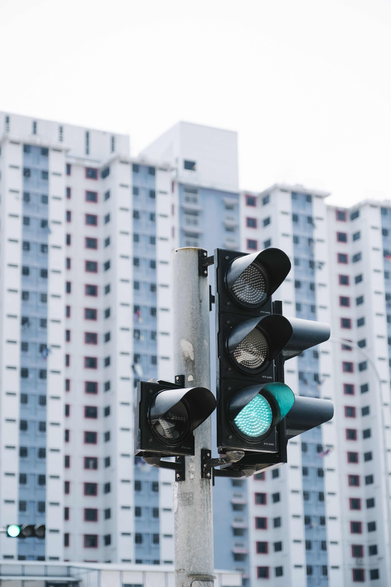

¿Qué son los Semáforos Inteligentes?
Definición
Los semáforos inteligentes son dispositivos de control de tráfico que utilizan sensores, cámaras y algoritmos de inteligencia artificial para gestionar el flujo vehicular de manera dinámica. A diferencia de los semáforos tradicionales que funcionan con temporizadores fijos, estos se adaptan en tiempo real a las condiciones del tráfico.
Tecnología Utilizada

- Sensores de infrarrojos: Detectan la presencia de vehículos en intersecciones.
- Cámaras inteligentes: Identifican el flujo de tráfico y clasifican los vehículos.
- Conectividad IoT: Los semáforos se comunican entre sí para coordinar el flujo.
- Algoritmos de IA: Predicen patrones de tráfico y optimizan los tiempos de luz.
- Paneles solares: Energía limpia para alimentar el sistema.
Impacto en Bilbao

El proyecto de semáforos inteligentes en Bilbao busca transformar la movilidad urbana en el Gran Bilbao. Con una población de más de 350,000 habitantes y un flujo vehicular constante, la implementación de esta tecnología permitirá:
- Mejorar la calidad del aire en el centro urbano
- Reducir el estrés de los conductores con tiempos de espera optimizados
- Priorizar el transporte público en horas pico
- Proteger a peatones y ciclistas con detección automática
Nuestra Misión
En SmartTraffic Bilbao, nuestra misión es modernizar la infraestructura vial de la ciudad mediante soluciones tecnológicas sostenibles que beneficien a todos los ciudadanos. Creemos en una Bilbao más inteligente, limpia y segura.